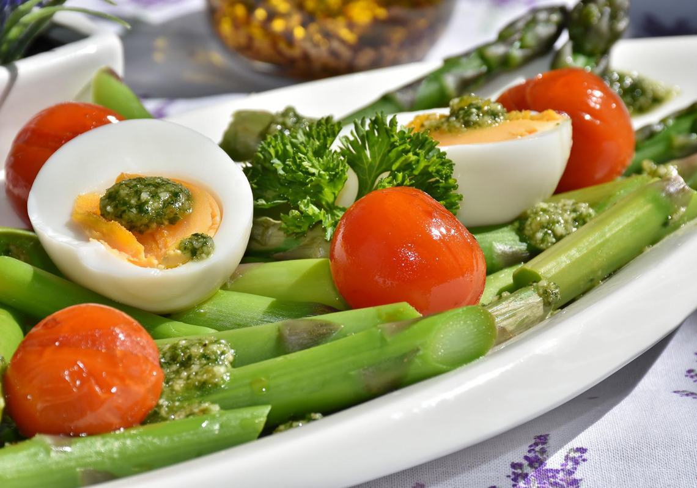

現今社會為了追求體態美，除了多定期做運動，也開始進行「生酮飲食」。聲稱適合生酮飲食人士的甜點店和餐廳成行成市，而且不少名人也愛在網上分享他們的生酮飲食食譜，生酮飲食究竟如何幫助減肥，令人如此趨之若鶩呢？今天我們就聊一聊什麼是「生酮飲食」。
平時我們不斷進食的情況下我們的身體依靠葡萄糖作為能量來時用的，當我們吃的比較多的時候，那我們的葡萄糖就會變成脂肪儲存在體內，儲存的脂肪燃燒之後產生的就是酮體，只要在斷食，脂肪就會有燃燒，這是非常自然的一個狀態。我們要做的就是把斷食的時間稍微的延長一點，那這種延長其實就是間歇行斷食。
什麼是「生酮飲食」？
一定有很多人在減重初期都有這樣的疑問，那就是什麼是「生酮飲食」？該怎麼吃？身體會不會壞掉？事實上，生酮飲食就是改變我們的正常營養攝取比例，為了達到瘦身效果，我們改成誰去極低的碳水化合物，大量脂肪還有適量的蛋白質，讓我們處於飢餓狀態，讓人體消耗的是脂肪而不是碳水化合物，當你燃燒脂肪時，脂肪會分解為酮體，然後你的身體可以使用它當作燃料，這樣你的身體實際上是可以由酮體運作。
小编綜合了健康生酮飲食法和間歇性斷食。有很多人不餓時仍然吃東西，他們想知道為什麼沒有效果，因為身體總算燃燒了脂肪，然後你就開始進食，會發生什麼呢？你會增加胰島素，胰島素升高之後，你的血糖會降低，那麼帶來的結果就是一個半小時後仍然會感到飢餓。
因此，事實上你前一晚所吃進的食物會顯示出你早上是不是會飢餓。如果正確地執行，一天只吃兩餐，你早上醒來食緊不會飢腸轆轆。
蔓延世界的「肥胖疫情」

除了我們很熟悉的新冠疫情之外，還有另一種疫情，存在的時間已經非常久，影響也非常大，死亡人數也是非常多，而且還在一直不斷的增加，這就是「肥胖疫情」。肥胖當然不能說是一個傳染病，但是如果大家都採用一樣的飲食方式，這個飲食方式之間互相去傳染那最後都達到了肥胖的這樣的一種被定義為「疾病」的狀態的話，那是不是可以說這就是一種疫情呢。
現在世界各國肥胖的比例越來越高，而跟肥胖相關的一些代謝性疾病人數也是越來越多。小編也曾經和肥胖較真過，也是在這個過程當中了解到低碳生酮飲食，以前經常害怕哪些高脂肪的東西，所以我們更多的會去選擇低脂肪的食物，現在超市也很容易買到，但是從來沒有認識到這些食物當中糖和碳水的含量究竟有多少，所以了解生酮之後呢，我的健康得到了很大的改善。
人類祖先的飲食？
很多人覺得生酮飲食是一種新的飲食或者說是極端的飲食，但是其實生酮飲食更多的是人類祖先的飲食，假如我們穿越到幾萬年前，其實你會發現很那吃到現在那些穀物，但是我們能夠吃到的就是肉和蔬菜，所以說生酮並不是一種不自然的新飲食，相反它跟人類祖先的那種飲食方式是更類似的。
有這樣一種說法是說，這就是把人類全部歷史濃縮到24h，我們吃肉吃了24個小時，6分鐘前開始吃穀物，4秒前開始吃加工食品。從進化論的角度來說，我們的身體甚至都沒有跟上最近的這種高碳低脂飲食的潮流。這就是為什麼很多人覺得原始飲食是比較能夠保持健康的。因為這可能是我們身體最自然的一種飲食方式。
該怎麼吃？

首先絕大部分人都應該去多吃蔬菜，保證食物的多樣性。其次要多吃健康的脂肪，包括牛油果、黃油、椰子油、橄欖油，那這些是我們真正要去吃的東西，最後一點也是最最最重要的，不少小伙伴在進行生酮飲食的時候，會陷入一個比較極端的誤區，支持一種食物或者幾種食物，用這樣的方式呢強迫身體入酮，希望能夠達到迅速減重的一個效果。
還有一些人雖然也在進行生酮飲食，但是他們吃的是所謂的髒生酮，這些都會讓減重的效果大打折扣。小編認為生酮並不僅僅是關於減重，而是一定要吃食物的原型而不是那些產品。真正生酮比較久的人能夠吃的越來越健康，這才是生酮飲食對健康最大的益處和最大的影響。如果你能夠買到比如說有機的食物，或者說草飼的肉類和雞蛋。生酮飲食更重要的是讓大家能夠越來越健康。
「你並不是因為減肥而變得健康，而是先變得健康，你的體重才會下降」——伯格醫生